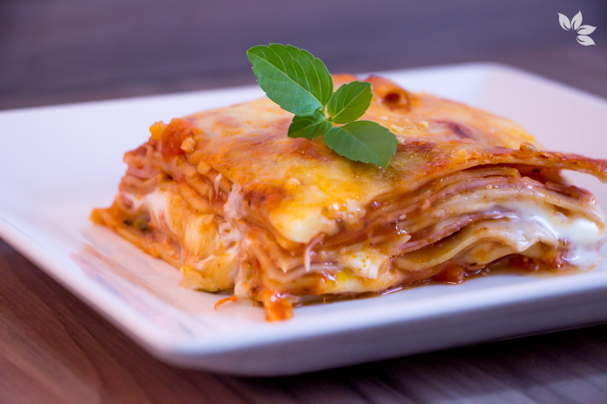
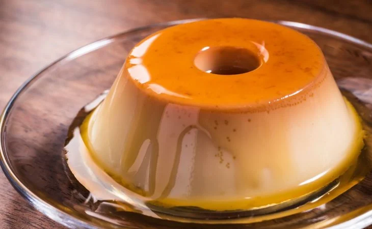

Aprenda a fazer essa maravilhosa Lasanha Tradicional de Presunto e Queijo!

INGREDIENTES
Molho de tomate-Pomodoro
2 xícaras de molho de tomate ao sugo (pode usar 1 sachê de molho pronto)
1/2 xícara de extrato de tomate (1 latinha daquela pequena)
1/2 xícara de extrato de tomate (1 latinha daquela pequena)
1 dente de alho picado
2 tomates maduros em cubos pequenos
500 ml de água fervente
1 colher de chá de páprica doce e picante
2 colheres de sopa de ketchup
ervas aromáticas desidratadas a gosto (usei orégano e alecrim)
10 folhas de manjericão fresco (aproximadamente)
sal e pimenta do reino a gosto
1 colher de sopa de óleo
Lasanha de presunto e queijo
300 g de queijo muçarela fatiada
100 g de queijo muçarela ralado pra finalizar (ou aumenta a quantidade de fatiado)
queijo parmesão ralado a gosto
200 g de massa para lasanha pré cozida grano duro
1 1/2 de molho pomodoro
200 g de requeijão cremoso
MODO DE PREPARO
Em uma panela funda, aqueça o óleo em fogo médio e adicione a cebola. Refogue até que
ela esteja transparente. Junte o alho picado, doure alguns instantes.
Junte os tomates picados, tempere com sal e pimenta do reino a gosto. Refogue até que os tomates comecem a desmanchar.
Acrescente o extrato de tomates, misture bem e cozinhe alguns minutos. Adicione o molho de tomates,
a água e o ketchup. Misture e espere levantar fervura.
Diminua o fogo, tempere o molho com as ervas desidratadas e a páprica, prove o sal e ajuste se achar necessário.
Deixe cozinhando em fogo baixo por uns 10 minutos para apurar bem os temperos e dar
uma leve reduzida. O molho é mais liquido mesmo, mas não pode ser aguado. Ele fica
levemente cremoso.
Desligue o fogo e adicione o manjericão. Rasgue as folhas com as mãos na hora de colocar.
Montagem da lasanha
Coloque a forma em cima de uma tábua. Isto vai evitar o choque térmico na forma. A
primeira camada da lasanha será de molho. Então adicione uma concha de molho na forma.
Coloque 4 folhas de massa, uma ao lado da outra, e cubra com mais uma concha de molho.
Por cima coloque as fatias de presunto e depois as fatias de queijo.
Cubra com uma concha de molho, coloque mais uma camada de massa e mais molho por
cima. A massa sempre precisa estar entre duas camadas de molho. Não precisa exagerar na
quantidade de molho.
Nesta segunda camada, coloque o presunto e coloque colheradas de requeijão por cima, não
precisa espalhar, cubra com o queijo.
Continue as camadas de molho, massa, presunto e queijo, e finalize com uma camada de
massa com molho por cima.
Cubra com papel alumínio com a parte brilhante para baixo, leve ao forno preaquecido a 200
ºC por 15 minutos. Eu uso a massa pré cozida grano duro, caso vc vá utilizar outro tipo de
massa, dê uma olhada no tempo de cozimento.
Retire do forno, remova o alumínio com cuidado, coloque o queijo muçarela ralado e o
parmesão. Volte para o forno por mais 10 minutos para derreter o queijo e gratinar. Se você
tiver grill pode deixar 5 minutos nele pra dar aquela dourada linda.
Retire do forno e espere 10 minutos antes de servir.
SOBREMESA DO DIA ( PUDIM )
Aprenda a fazer um pudim simples!

INGREDIENTES
2 xícaras de chá de açúca
½ xícara de chá de água
1 lata de leite condensado
1 lata de creme de leite
1 lata de leite (use a lata de leite condensado como medida)
1 gelatina sem sabor
MODO DE PREPARO DA CALDA
Reúna todos os ingredientes;
Coloque o açúcar e a água em uma forma redonda com um furo no meio, misture e leve ao fogo médio até ferver;
Quando começar a ferver, mexa a forma lentamente para que a calda não empedre, até ficar um caramelo dourado;
Retire do fogo e espalhe a calda pela forma de modo uniforme e reserve.
MODO DE PREPARO DO PUDIM E DA MONTAGEM
Dissolva a gelatina de acordo com as instruções do produto;
Em um liquidificador, coloque o leite condensado, o creme de leite, o leite, a gelatina dissolvida e bata até formar um creme homogêneo e liso;
Despeje a massa na forma com a calda e leve para a geladeira até ficar bem firme;
Despeje a massa na forma com a calda e leve para a geladeira até ficar bem firme;